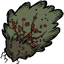
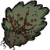

Berry Bushes are plants commonly found in Grasslands and occasionally Forests. They can be harvested to receive 1 Berries, after which they will need from 3 to 5 days to regrow (Rain will reduce this time). Berry Bushes can be dug up with a Shovel and replanted in a new location (typically closer to a base camp). Doing this will require the bush to be fertilized before it will regrow any new berries. If the player tries to dig up a Berry Bush without fertilizing it, it will result in 2 Twigs and the bush's destruction.
Replanted Berry Bushes will only produce Berries for 4 to 5 harvests, after which they will require additional fertilizer. As the plant gets closer to this point, it will begin to show fewer berries in its branches. When it can no longer be harvested, it will again resemble an unfertilized bush. Picking Berries from a Berry Bush before enough are shown will also cause the bush to become dry and require fertilization.
These plants are highly flammable and can be used as fuel in Campfires and Fire Pits. When burned on the ground, they will leave behind 1 Ash. Because they burn easily, Berry Bushes planted close together are very susceptible to lightning strikes. This can be prevented by building a Lightning Rod to draw the lightning.
Berry Bushes will not produce Berries in Winter. They can be harvested during that time if the Berries are left unpicked.
There are two distinct varieties of Berry Bushes, which stack separately. The leafy variety cannot be used to make Bush Hats. Other than this however they function exactly the same.
Gobblers love to eat Berries and will quickly clean off multiple Bushes if not stopped.
Usage
Reign of Giants
In the Reign of Giants DLC, Berry Bushes will turn into Withered Berry Bushes during Summer. During this condition, Berry Bushes are unharvestable for their Berries digging these will yield 2 Twigs. A way of curing or preventing these from withering is to simply apply fertilizers or build an Ice Flingomatic nearby.
Trivia
Given that a character needs 75 calories per day, one would need at max 30 Berry Bushes to be totally self-sufficient during Summer (assuming the timely harvesting and cooking the berries). Rotting Roasted Berries on the ground can be a quick source of fertilizer to renew the bushes themselves.
Berry Bushes can be transplanted to grow within the Ruins, making them an excellent food source.
Berry Bushes need to be fertilized as mentioned in order to grow more berries after it's been picked a number of times. One Rot is the most efficient way to fertilize them with. This helps in saving Manure for your farm plots.
Withered Berry Bushes share the same model as the Barren (unfertilized) Berry Bushes.
Bugs
If a Gobbler jumps out of or into a dead Bush, the Bush will appear fertilized. Hovering over the Bush with Manure can create a glitch (see Bush glitch image). Upon world reload they will become dead. These visually glitched Bushes don't grow Berries.
If a Gobbler jumps into a Berry Bush at dawn the Berries will disappear because the Gobbler presumably ate them, but if you hover your mouse over the bush you can still pick it for berries.
 



{kind=link}
{kind=link}
{kind=link}
{kind=link}
{kind=link}
{kind=link}